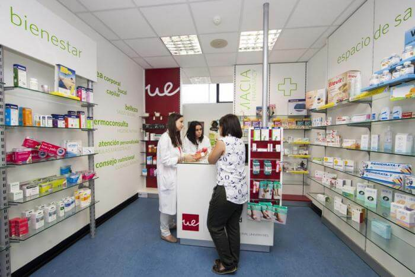

La gestión de compras es uno de los ejes económicos más importantes de la oficina de farmacia,
puesto que conjuntamente con una política de trato profesional, agradable y personalizado influye
directamente en la calidad de servicio al cliente. En zonas donde existen varias farmacias en un
radio relativamente reducido, si una persona no encuentra el producto deseado en el momento, se
están perdiendo oportunidades de negocio, puesto que es bastante fácil dirigirse a otro
establecimiento.
Los servicios asociados exclusivamente a receta que puede ofrecer una farmacia pueden ser:
- Control de glucosa y colesterol.
- Seguimiento farmacoterapéutico.
- Medición del pulso, presión arterial y monitorización ambulatoria de la presión arterial (MAPA).
- Formulación magistral.
Prohibiciones del dispensador
- Cambiar el principio activo, concentración, forma farmacéutica, vía de administración, frecuencia,
cantidad y la dosis prescrita.
- Dispensar medicamentos alterados o fraudulentos.
- Recomendar a los usuarios la utilización de
medicamentos.
- Tener muestras médicas de medicamentos.
Pueden anotarse también:
- El consumo medio mensual
- Los niveles de stock: stock de seguridad, stock de rotación
- Los otros sitios de almacenamiento.
- Los pedidos en curso y su fecha.
 COMPRA
COMPRA
Centros médicos, dispensarios, consultas privadas.
Guarderías, colegios, institutos.
Empresas, oficinas, etc.
Bancos, cajas.
Bares, restaurantes.
Hogares de jubilados, centros recreativos.
Paradas de metro/autobús/tren.
Organización del almacén
Dentro del almacén puede optimizarse el espacio mediante la creación de altillos, fijación de estanterías
estándar que se adapten completamente a la pared y estanterías colocadas de forma similar a las grandes
superficies.Es importante tener en cuenta que en la organización del espacio de almacén, a diferencia de
en la zona abierta al público, prima la operatividad frente al diseño.
¿como trabajan en la compra en una farmacia?
Si en la oficina de farmacia trabajan varias personas, es conveniente que la clasificación de los productos
dentro del almacén no siga un criterio arbitrario y subjetivo, sino que es recomendable establecer unas
normas que han de cumplir tanto los propietarios como los empleados. De esta manera, si todo el personal
trabaja del mismo modo, será más fácil la dispensación y la explicación del
funcionamiento de las tareas de almacenaje a los trabajadores
Control de inventarios por códigode barras
El control de inventarios a través de códigos de barras y pedidos por módem (fig. 4) es el método más operativo y
rápido, puesto que el ordenador genera automáticamente un prepedido cuando el stock se sitúa por debajo del límite
de seguridad. El farmacéutico sólo tiene que validar si está de acuerdo con las cantidades y productos que se
muestran en pantalla, o introducir las variaciones que considere oportunas. Automáticamente, una vez comprobado
el prepedido,se da la orden de pedido y éste es tramitado directamente al proveedor mediante módem.
 Iniciar Sesión
Iniciar Sesión Registrarse
Registrarse